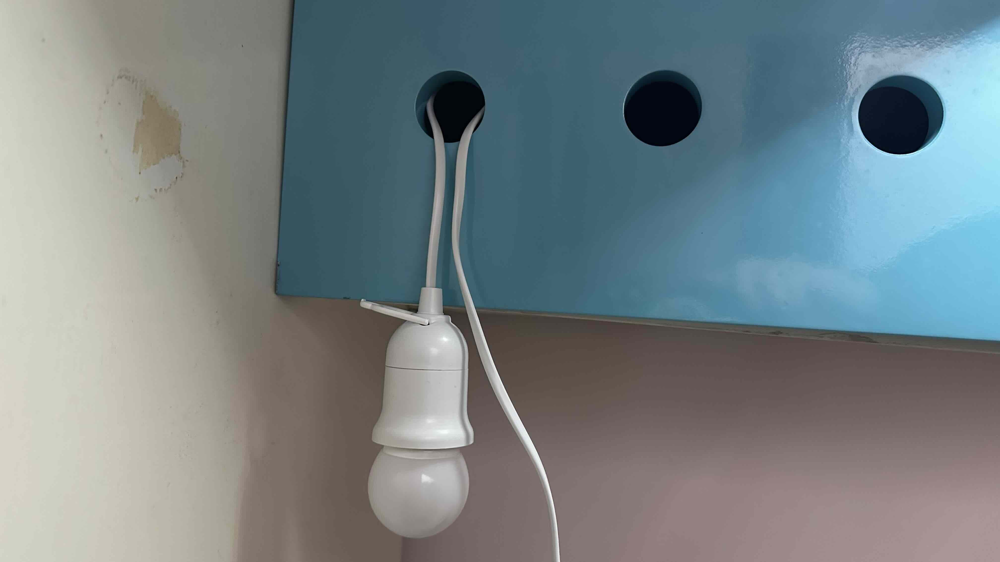
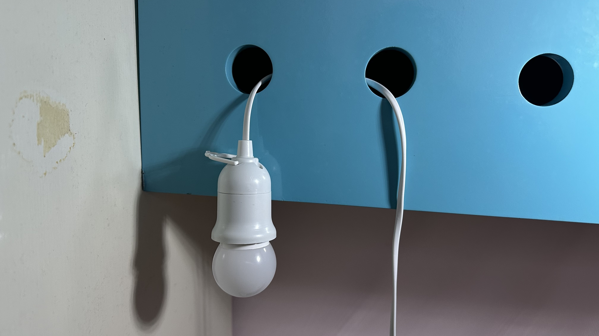

在架子上挂一盏灯 | 原创，AI翻译
我想把台灯重新安置在书架更靠后的位置，以减少阅读时的干扰。
由于床架上的物品摆放复杂，我决定从拼多多购买一个挂钩。几天后到货，但从快递站取回后，我把它弄丢在家里的某个角落，不得不再次购买同款产品。
今天，我突然想到尝试另一种方法。我简单地将电线绕成X形或U形，并将扭曲部分插入孔中。这样，台灯就能固定在书架上，不会掉下来。
基本上，这实现了某种平衡。台灯因重力想要下落，于是拉扯电线。然而，电线的上部被孔的上边缘阻挡，无法被拉出。
接着，我尝试用铅笔辅助固定电线，但铅笔滑入了孔中。仔细查看内部，我发现书架里竟然有东西。它们是怎么进去的？之前我发现书架难以打开。哦，其实它是可以打开的。
于是，解决方案变得更简单了。由于我不希望电线阻碍书架关闭，我使用了另一个孔让电线穿出。
这段经历凸显了日常生活中所需的细致入微、情境感知的问题解决能力，尽管人工智能发展迅速，我仍对其能否完全复制这种能力持怀疑态度。
 来源：自摄
来源：拼多多
 来源：自摄